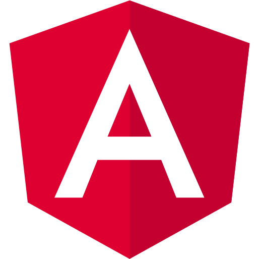
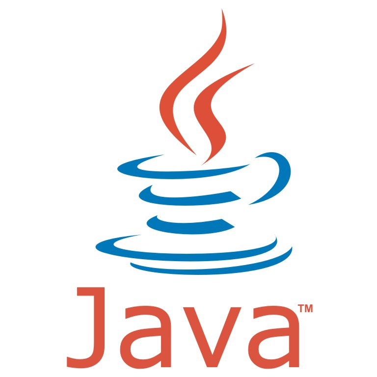

<mat-toolbar id="footer-cont">
    <div id="footer-content">
        <p>Gecko2Code &copy; 2022</p>
        <p>Developed by gi-ga-dev</p>
        <p>Technologies used: </p>
        
        
        
        
        
        

    </div>

    <div id="footer-content">
        <p>Connect with me:</p>

        <span id="footer-link-cont">
            <a id="footer-links" href="https://github.com/gi-ga-dev">
                <i class="fa-brands fa-github"></i>
            </a>

            <a id="footer-links" href="mailto:cloud.gianluca@gmail.com">
                <i class="fa-solid fa-envelope"></i>
            </a>

            <a id="footer-links" href="https://www.linkedin.com/in/gianluca-gallone-77aba217a/">
                <i class="fa-brands fa-linkedin"></i>
            </a>
        </span>
    </div>

</mat-toolbar>